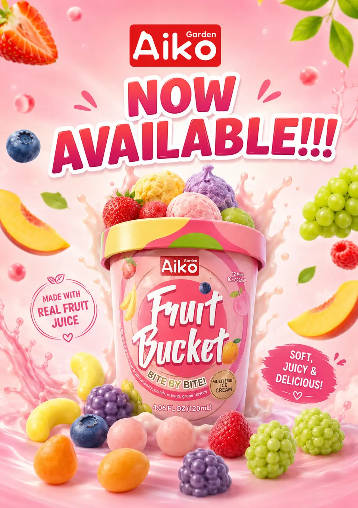
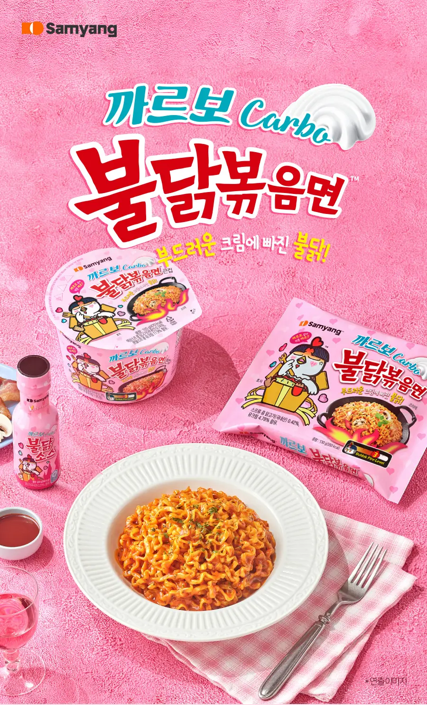
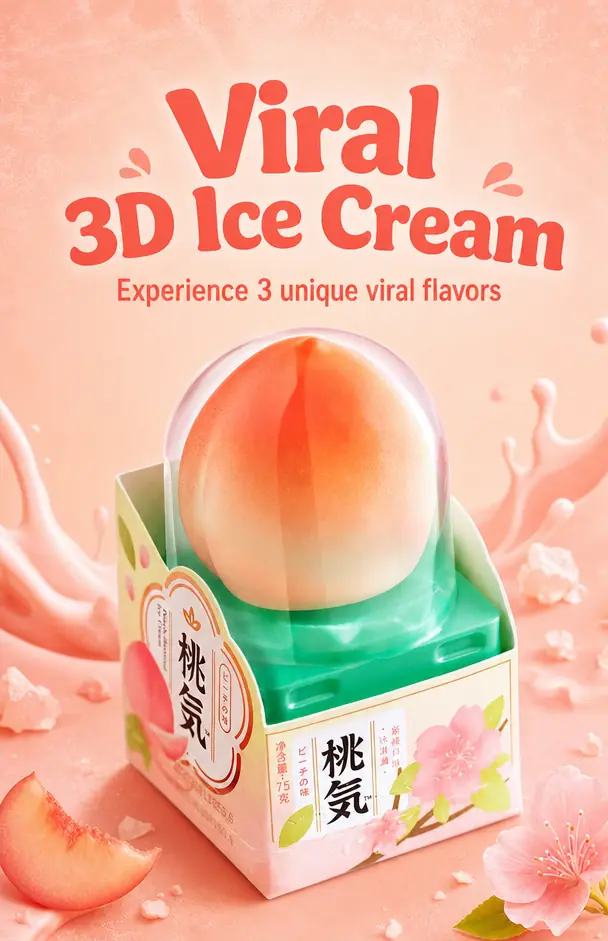
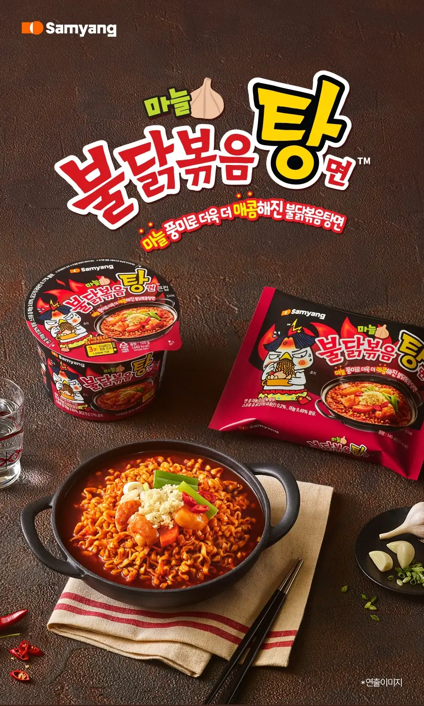
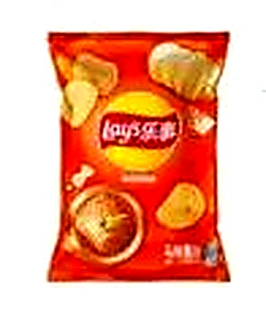

Concept 01 — Editorial Importer Best overall fit: premium, clear, strong buyer trust
Asian food wholesale distributor USA
Imported snacks, ramen, drinks & frozen treats — edited for retail velocity.
A buyer-first homepage that feels like a curated trade desk: what sells, what ships cold, what programs are available, and how to open wholesale pricing without hunting.
360+active SKUs surfaced as buyer inventory
50+brands across Korean, Japanese, Chinese, Filipino
CS / PLTprograms displayed as simple buying paths

Novelty frozen dessertsHero card for cold-chain differentiation

Shop the page like a buyer, not a brochure.
Replace generic feature blocks with concise product lanes that connect directly to catalog/account intent.

Frozen Asian Foods
Novelty ice cream, desserts, and cold-chain products that need reliable handling.

Instant Noodles
Fast-moving ramen and noodle programs for retail aisles and bulk buyers.
Snacks
Imported chips, sweets, and impulse products displayed as category drops.

Beverages
Asian beverages and refreshment lanes with account-gated pricing CTA.